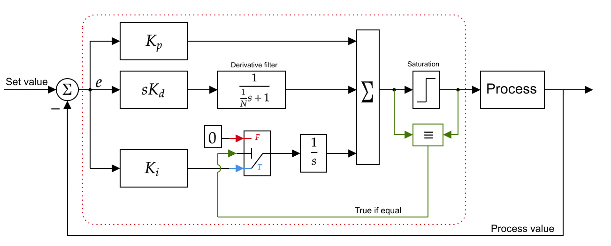
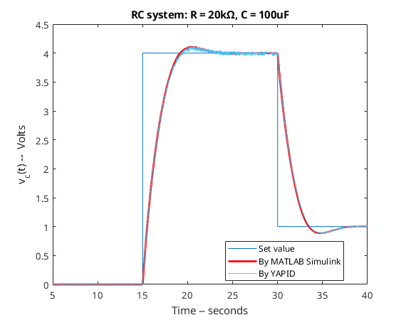
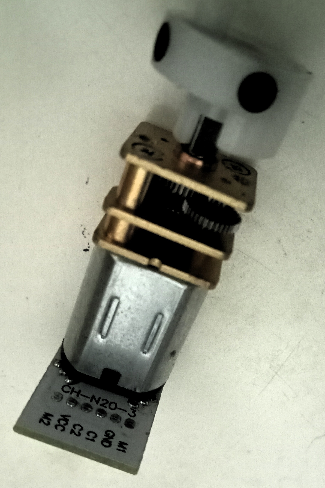

YAPID (Yet Another PID Library for Arduino)
About YAPID
YAPID is another PID library for Arduino. In YAPID, we focus on more accurate implementations through detailed discretization techniques and result comparisons against MATLAB Simulink.
Details on the PID implementation are as follows:
- Bilinear transform (trapezoidal or Tustin) method for the discretization technique
- A derivative filter for the derivative term of the PID control
- Simple integral windup prevention method with clamping technique
Besides PID, YAPID also has two low-pass filter implementations:
- 1st order (time constant) low-pass filter
- 2nd order (Butterworth) low-pass filter
| Author(s) information: |
|---|
| Auralius Manurung - Universitas Telkom, Bandung ✉ auralius.manurung@ieee.org |
Control algorithm derivations
YAPID uses bilinear transform to discretize both the PID and the filter transfer functions. Additionally, YAPID also has a clamping method implemented to prevent the integrator windup.

Mathematical details can be found in the following links:
How to use YAPID
These are the main functions that we can use:
-
float YAPID::Compute0(float set_value, float process_value)- This simply sends
set_valueas control output. - There is no feedback control happening here.
- This function is useful to testing system's open-loop respose.
- This simply sends
-
float YAPID::Compute1(float set_value, float process_value)- D-term is computed from the filtered errors.
- With derivative kicks.
- Simple integral windup prevention with clamping technique.
-
float YAPID::Compute2(float set_value, float process_value)- D-term is computed from the filtered process values.
- No derivative kicks.
- Simple integral windup prevention with clamping technique .
-
float YAPID::FOLP(float tau, float in)- First-order low-pass filter (time-constant filter).
-
float YAPID::SOLP(float tau, float in)- Second-order low-pass filter (Butterworth filter).
YAPID DOES NOT measure the elapsed time every iteration. It simply uses the provided sampling time during the setup. Therefore, to guarantee control determinism, it is easier if we use a timer interrupt handler to run the control periodically. All provided examples use timer interrupts.
To use YAPID library, first, we need to include the header file:
#include "yapid.h"
Next, we create a global YAPID object and several global variables:
// Create the PID controller
float kp = 100.; // kp
float ki = 10.0; // ki
float kd = 1.0; // kd
float N = 1.0; // derivative filter coefficient (Hz)
float Ts = 1e-3;
YAPID pid(Ts, kp, ki, kd, N);
Within the Arduino's setup() function, we define the limits for the control's output. The default limit is . Since we use a timer interrupt, we setup out timer interrupt also in this setup() function.
#define TIMER2_INTERVAL_MS 1 // 1kHz
void setup()
{
// Setup the timer interrupt (we use NANO, timer-1, and
// https://github.com/khoih-prog/TimerInterrupt)
ITimer1.init();
ITimer1.attachInterruptInterval(TIMER1_INTERVAL_MS, Timer1Handler);
// Define the control output limits
// Here, the output becomes PWM signals (0 to 255)
pid.SetOutputLimits(0., 255)
// ...
// ...
}
Finally, in the timer interrupt function handler, we can put our PID control. The steps are:
* read the sensor (pv)
* compute the PID (co)
* apply the output to the actuator/plant
* measure the elapsed time
void Timer1Handler()
{
float pv = (float)analogRead(A0) * 5.0 / 1024.0;
float co = pid.Compute1(SV, pv);
analogWrite(pwm_port, (int)co);
pid.UpdateTime();
}
Examples with comparisons to MATLAB Simulink
RC-system
Here, our task is to use YAPID to control by modulating .
The following code listing is the Arduino Nano's implementation where we set , , , and . The PID control is executed periodically (every 1 ms or 1kHz) by Timer-1.
#define TIMER_INTERRUPT_DEBUG 0
#define _TIMERINTERRUPT_LOGLEVEL_ 0
#define USE_TIMER_1 true
#include "TimerInterrupt.h"
#include "yapid.h"
#define TIMER1_INTERVAL_MS 1
const int pwm_port = 3; // TIMER-2
// Create the PID controller
float kp = 100.; // kp
float ki = 100.0; // ki
float kd = 10.0; // kd
float N = 100.0; // derivative filter constant (Hz)
float Ts = 1e-3;
YAPID pid(Ts, kp, ki, kd, N);
volatile float SV = 0.0; // set value
//------------------------------------------------------------------
void setup() {
ITimer1.init();
ITimer1.attachInterruptInterval(TIMER1_INTERVAL_MS, Timer1Handler);
pinMode(pwm_port, OUTPUT);
analogWrite(pwm_port, 0);
pid.SetOutputLimits(0., 255.) ;
Serial.begin(1000000);
}
void rx()
{
while(Serial.available()){
int StringCount = 0;
String input = Serial.readString();
SV = input.toFloat();
}
}
inline void tx()
{
Serial.print(pid.Now(), 3);
Serial.print(",");
Serial.print(pid.SV());
Serial.print(",");
Serial.print(pid.PV());
Serial.print(",");
Serial.print(pid.P());
Serial.print(",");
Serial.print(pid.I());
Serial.print(",");
Serial.print(pid.D());
Serial.print(",");
Serial.print(pid.CO());
Serial.print(",");
Serial.print(pid.SAT_CO());
Serial.print("\n");
}
void Timer1Handler()
{
float pv = (float)analogRead(A0) * 5.0 / 1024.0;
float co = pid.Compute1(SV, pv);
analogWrite(pwm_port, (int)co);
pid.UpdateTime();
}
void loop()
{
// Serial receive
rx();
// Serial transmit
tx();
if (pid.Now() < 15.0)
SV = 0.0;
else if ((pid.Now() > 15.0) && (pid.Now() < 30.0))
SV = 4.0;
else if (pid.Now() > 30.0)
SV = 1.0;
}
The next figure shows similar implementation in MATLAB Simulink with identical control parameters. For this, we use the Simulink® Support Package for Arduino®. The Simulink file can be downloaded here (R2024b).
Finally, the results are shown in the following plots. 
As shown by the plots, YAPID gives results that is very close to MATLAB Simulink.
DC-motor control (with quadrature encoder)
The left figure is the cheap N20 DC motor that comes with a quadrature encoder. The right figure shows the overall system with Arduino Uno and Arduino Motor Shield rev. 3.


The following code listing is the Arduino Nano's implementation where we set , , , and . The PID control is executed periodically (every 1 ms or 1kHz) in the Arduino's loop() function.
/**
* N20 DC motor with rotary encoder.
* The encoder generates 7 pulses per rotation.
* The encoder is set to x1 mode, thus, only channel A will trigger
* the external interrupt. Motor gear ratio is 210:1.
*/
#include "yapid.h"
#define PID_LOOP_INTERVAL_US 1000
// Pin/port configurations
int encoderA_pin = 2; // Digital pin #2, INT0
int encoderB_pin = 3; // Digital pin #4
const int pwm_port = 11; // PWM of motor, Timer 2
const int dir_port = 13; // Direction of the motor.
// Create the PID controller
float kp = 10.; // kp
float ki = 4.0; // ki
float kd = 0.01; // kd
float N = 100.0; // derivative filter constant (Hz)
float Ts = 1e-3;
YAPID pid(Ts, kp, ki, kd, N);
volatile float SV = 0.0; // set value
volatile long pulses = 0; // Output pulses.
const float ppr = 7*210-1; // Pulses per rotation
static unsigned long lastLoop = 0;
//------------------------------------------------------------------------
void setup() {
Serial.begin(921600);
pinMode(pwm_port, OUTPUT);
pinMode(dir_port, OUTPUT);
pinMode(encoderA_pin, INPUT);
pinMode(encoderB_pin, INPUT);
analogWrite(pwm_port, 0);
digitalWrite(dir_port, HIGH);
attachInterrupt(0, A_CHANGE, RISING);
pid.SetOutputLimits(-254., 254.);
}
void rx()
{
while(Serial.available()){
int StringCount = 0;
String input = Serial.readString();
SV = input.toFloat();
}
}
inline void tx()
{
Serial.print(pid.Now(), 3);
Serial.print(",");
Serial.print(pid.SV());
Serial.print(",");
Serial.print(pid.PV());
Serial.print("\n");
}
void Timer1Handler()
{
float pv = (float)pulses / ppr * 360.; // in degs
float co = pid.Compute1(SV, pv);
analogWrite(pwm_port, (int)abs(co));
if (co > 0.0)
digitalWrite(dir_port, HIGH);
else
digitalWrite(dir_port, LOW);
pid.UpdateTime();
}
inline void runPID()
{
float pv = (float)pulses / ppr * 360.; // in degs
float co = pid.Compute1(SV, pv);
analogWrite(pwm_port, (int)abs(co));
if (co > 0.0)
digitalWrite(dir_port, HIGH);
else
digitalWrite(dir_port, LOW);
pid.UpdateTime();
}
void loop()
{
runPID();
// --------------------------------------------------------------------------
// wait and do something else!
while(micros()-lastLoop < PID_LOOP_INTERVAL_US) {
rx();
tx();
// Experiment routines
if (pid.Now() < 5.0)
SV = 0.0;
else if ((pid.Now() > 5.0) && (pid.Now() < 8.0))
SV = 180.0;
else if (pid.Now() > 8.0 && (pid.Now() < 11.0))
SV = -180.0;
else if (pid.Now() > 11.0)
SV = 0.0;
}
lastLoop = micros();
}
// https://www.cytron.io/tutorial/arduino-2a-motor-shield-encoder-motor
void A_CHANGE()
{
if( digitalRead(encoderA_pin) == digitalRead(encoderB_pin) )
pulses--; // moving reverse
else
pulses++; // moving forward
}
Since the quadrature encoder is processed by an external interrupt service, we found the readings to be more robust if we put the PID loop in the Arduino's loop() function rather than in a timer interrupt service.
The next figure shows similar implementation in MATLAB Simulink with identical control parameters. The Simulink file can be downloaded here (R2024b).
Note that to read the quadrature encoder, we create our own Simulink block since the shipped quadrature encoder block only allows -mode readings. As for the custom quadrature encoder block, it allows -mode readings.
Finally, the results are shown in the following plots.
As shown by the plots, YAPID gives results that is very close to MATLAB Simulink.